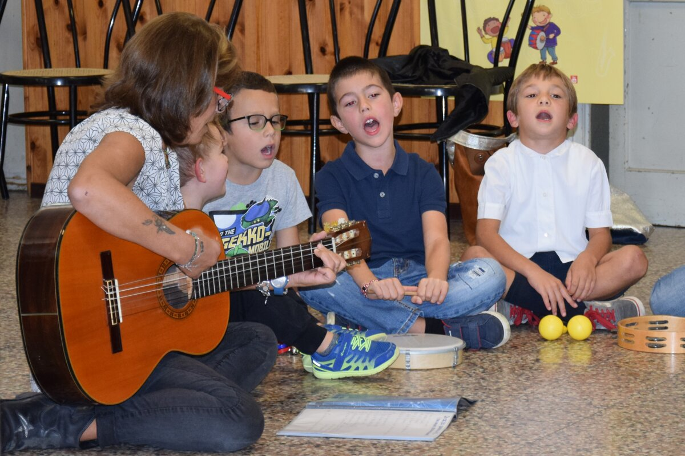

L’edizione 2025 di «Pronti, settembre, via!» era dedicata ai bambini nati dal 2014 al 2019. Nelle prime due settimane di settembre, il progetto ha proposto attività musicali e ricreative per le famiglie con figli alla scuola primaria.
La Filarmonica presenta due settimane di laboratori prima dell’inizio della scuola.

L’edizione 2025 di «Pronti, settembre, via!» era dedicata ai bambini nati dal 2014 al 2019. Nelle prime due settimane di settembre, il progetto ha proposto attività musicali e ricreative per le famiglie con figli alla scuola primaria.